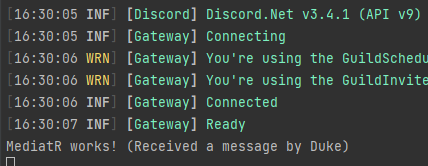

Configuring MediatR
Prerequisites
- A simple bot with dependency injection configured
Downloading the required packages
You can install the following packages through your IDE or go to the NuGet link to grab the dotnet cli command.
| Name | Link |
|---|---|
MediatR |
link |
MediatR.Extensions.Microsoft.DependencyInjection |
link |
Adding MediatR to your dependency injection container
Adding MediatR to your dependency injection is made easy by the MediatR.Extensions.Microsoft.DependencyInjection package. You can use the following piece of code to configure it. The parameter of .AddMediatR() can be any type that is inside of the assembly you will have your event handlers in.
.AddMediatR(typeof(Bot))
Creating notifications
The way MediatR publishes events throughout your applications is through notifications and notification handlers. For this guide we will create a notification to handle the MessageReceived event on the DiscordSocketClient.
// MessageReceivedNotification.cs
using Discord.WebSocket;
using MediatR;
namespace MediatRSample.Notifications;
public class MessageReceivedNotification : INotification
{
public MessageReceivedNotification(SocketMessage message)
{
Message = message ?? throw new ArgumentNullException(nameof(message));
}
public SocketMessage Message { get; }
}
Creating the notification publisher / event listener
For MediatR to actually publish the events we need a way to listen for them. We will create a class to listen for discord events like so:
// DiscordEventListener.cs
using Discord.WebSocket;
using MediatR;
using MediatRSample.Notifications;
using Microsoft.Extensions.DependencyInjection;
using System.Threading;
using System.Threading.Tasks;
namespace MediatRSample;
public class DiscordEventListener
{
private readonly CancellationToken _cancellationToken;
private readonly DiscordSocketClient _client;
private readonly IServiceScopeFactory _serviceScope;
public DiscordEventListener(DiscordSocketClient client, IServiceScopeFactory serviceScope)
{
_client = client;
_serviceScope = serviceScope;
_cancellationToken = new CancellationTokenSource().Token;
}
private IMediator Mediator
{
get
{
var scope = _serviceScope.CreateScope();
return scope.ServiceProvider.GetRequiredService<IMediator>();
}
}
public async Task StartAsync()
{
_client.MessageReceived += OnMessageReceivedAsync;
await Task.CompletedTask;
}
private Task OnMessageReceivedAsync(SocketMessage arg)
{
return Mediator.Publish(new MessageReceivedNotification(arg), _cancellationToken);
}
}
The code above does a couple of things. First it receives the DiscordSocketClient from the dependency injection container. It can then use this client to register events. In this guide we will be focusing on the MessageReceived event. You register the event like any ordinary event, but inside of the handler method we will use MediatR to publish our event to all of our notification handlers.
Adding the event listener to your dependency injection container
To start the listener we have to call the StartAsync() method on our DiscordEventListener class from inside of our main function. To do this, first register the DiscordEventListener class in your dependency injection container and get a reference to it in your main method.
// Program.cs
var listener = services.GetRequiredService<DiscordEventListener>();
await listener.StartAsync();
Creating your notification handler
MediatR publishes notifications to all of your notification handlers that are listening for a specific notification. We will create a handler for our newly created MessageReceivedNotification like this:
// MessageReceivedHandler.cs
using System;
using MediatR;
using MediatRSample.Notifications;
namespace MediatRSample;
public class MessageReceivedHandler : INotificationHandler<MessageReceivedNotification>
{
public async Task Handle(MessageReceivedNotification notification, CancellationToken cancellationToken)
{
Console.WriteLine($"MediatR works! (Received a message by {notification.Message.Author.Username})");
// Your implementation
}
}
The code above implements the INotificationHandler<> interface provided by MediatR, this tells MediatR to dispatch MessageReceivedNotification notifications to this handler class.
Note
You can create as many notification handlers for the same notification as you desire. That's the beauty of MediatR!
Testing
To test if we have successfully implemented MediatR, we can start up the bot and send a message to a server the bot is in. It should print out the message we defined earlier in our MessageReceivedHandler.

Adding more event types
To add more event types you can follow these steps:
- Create a new notification class for the event. it should contain all of the parameters that the event would send. (Ex: the
MessageReceivedevent takes oneSocketMessageas an argument. The notification class should also map this argument) - Register the event in your
DiscordEventListenerclass. - Create a notification handler for your new notification.